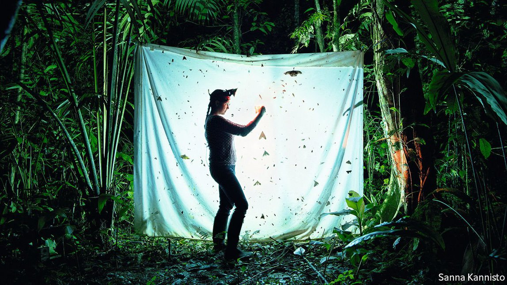

2021-07-01T07:00:21+00:00
The other environmental emergency
另一个环境紧急状况
另一個環境緊急狀況
Loss of biodiversity poses as great a risk to humanity as climate change
生物多样性丧失和气候变化一样危险
生物多樣性喪失和氣候變化一樣危險
Technology has a growing role to play in monitoring, modelling and protecting ecosystems, writes Catherine Brahic
本专题作者凯瑟琳·布拉伊克认为，技术将在监测、模拟和保护生态系统方面发挥日益重要的作用【专题报道《保护生态多样性》系列之一】
本專題作者凱瑟琳·布拉伊克認為，技術將在監測、模擬和保護生態系統方面發揮日益重要的作用【專題報道《保護生態多樣性》系列之一】
HUMAN SOCIETIES depend on healthy ecosystems. People consume their products in the shape of fish, meat, crops, timber and fibres such as cotton and silk. Medicines may be directly harvested from the natural world or inspired by molecules and mechanisms found within it. The ecosystems that crops depend upon are regulated by living things. Through photosynthesis, trees and other plants take in carbon and pump out oxygen. In doing so they remove roughly 11bn tonnes of carbon dioxide from the atmosphere each year, equivalent to 27% of what human industry and agriculture emits (the oceans absorb a further 10bn tonnes).
人类社会依赖健康的生态系统。人们消费这些系统的产物，比如鱼、肉、农作物、木材和纤维（比如棉和丝绸）。药物可以直接从自然界获得，也可以受在自然界中发现的分子和机制启发而来。农作物依赖的生态系统受生物的调节。通过光合作用，树木和其他植物吸收二氧化碳并释放氧气。以这种方式，它们每年从大气中移除约110亿吨二氧化碳，相当于人类工业和农业排放量的27%（海洋吸收了另外100亿吨）。
人類社會依賴健康的生態系統。人們消費這些系統的產物，比如魚、肉、農作物、木材和纖維（比如棉和絲綢）。藥物可以直接從自然界獲得，也可以受在自然界中發現的分子和機制啟發而來。農作物依賴的生態系統受生物的調節。通過光合作用，樹木和其他植物吸收二氧化碳並釋放氧氣。以這種方式，它們每年從大氣中移除約110億噸二氧化碳，相當於人類工業和農業排放量的27%（海洋吸收了另外100億噸）。
The services that ecosystems provide to humanity depend, in turn, on there being a diversity of living things. More than 75% of global food-crop types, including coffee, cocoa and almonds, are pollinated by animals. The complex web underpinning every food chain and ecosystem means that the narrow range of species that humans eat and exploit cannot be sustained without the existence of a much greater diversity of animals, plants and bacteria.
生态系统为人类提供的服务又依赖生物多样性。全球超过75%的粮食作物种类，包括咖啡、可可和杏仁，都由动物授粉。虽然人类食用和利用的物种范围很窄，但由于每条食物链和每个生态系统都靠复杂网络支撑，假如没有种类多得多的动物、植物和细菌存在，这些物种就无法维续。
生態系統為人類提供的服務又依賴生物多樣性。全球超過75%的糧食作物種類，包括咖啡、可可和杏仁，都由動物授粉。雖然人類食用和利用的物種範圍很窄，但由於每條食物鏈和每個生態系統都靠複雜網絡支撐，假如沒有種類多得多的動物、植物和細菌存在，這些物種就無法維續。
More diverse forests store more carbon than monocultures. Skipjack tuna makes up roughly half of the global tuna catch for human consumption. As young animals, they eat zooplankton, which is to say very small floating animals like tunicates, ctenophores and small crustaceans as well as the larvae of larger animals. As adults, they eat smaller fish, squid and crustaceans. To conserve the skipjack, all this diversity in its food chain must also be conserved.
更多样化的森林能比单树种森林储存更多的碳。鲣鱼约占到了全球供人类消费的金枪鱼捕捞量的一半。它们在年幼时吃浮游动物，也就是像被囊动物、栉水母和小型甲壳动物等非常小的漂浮动物，还有更大些的动物的幼体。成年后，它们吃较小的鱼、鱿鱼和甲壳动物。为保护鲣鱼，就必须保护它的食物链中的全部多样性。
更多樣化的森林能比單樹種森林儲存更多的碳。鰹魚約佔到了全球供人類消費的金槍魚捕撈量的一半。它們在年幼時吃浮遊動物，也就是像被囊動物、櫛水母和小型甲殼動物等非常小的漂浮動物，還有更大些的動物的幼體。成年後，它們吃較小的魚、魷魚和甲殼動物。為保護鰹魚，就必須保護它的食物鏈中的全部多樣性。
Since the 1990s, alarmed by studies showing rapid declines in animal and plant species around the globe, ecologists have talked of an impending mass extinction. It would be the sixth in the Earth’s history, but one unlike any that has come before. Surveys show that the loss of biodiversity is the result of a combination of factors: climate change, pollution, human exploitation of land, sea, plants and animals, and the displacement of some species into new territories where they play havoc with existing ecosystems. Uniquely in Earth’s history, each of these drivers of ecological change is caused by a single species: Homo sapiens.
自1990年代以来，显示全球动植物物种迅速减少的研究让生态学家们警觉起来，他们谈论即将发生的大规模灭绝。这将是地球历史上的第六次，但不同于以往任何一次。调查表明，生物多样性的丧失是多种因素共同作用的结果：气候变化、污染、人类对陆地、海洋、植物和动物的开发利用，以及某些物种迁移到新地域而对那里现有的生态系统造成严重破坏。在地球历史上前所未见的是，这些驱动生态变化的因素中的每一个都是由单个物种——智人——造成的。
自1990年代以來，顯示全球動植物物種迅速減少的研究讓生態學家們警覺起來，他們談論即將發生的大規模滅絕。這將是地球歷史上的第六次，但不同於以往任何一次。調查表明，生物多樣性的喪失是多種因素共同作用的結果：氣候變化、污染、人類對陸地、海洋、植物和動物的開發利用，以及某些物種遷移到新地域而對那裡現有的生態系統造成嚴重破壞。在地球歷史上前所未見的是，這些驅動生態變化的因素中的每一個都是由單個物種——智人——造成的。
When IPBES (the Intergovernmental Science-Policy Platform on Biodiversity and Ecosystem Services, similar to the Intergovernmental Panel on Climate Change) published its assessment of the state of global biodiversity in 2019, it offered a sobering picture. Roughly 1m animal and plant species were deemed to be at risk of extinction, more than at any other point in human history. These included many that are used in farming. At least 9% of the 6,200 breeds of domesticated mammals that humans eat, or use to produce food, had become extinct by 2016, and at least 1,000 more are threatened. More than one-third of continental land area and nearly three-quarters of freshwater resources are used to produce crops or livestock, but environmental degradation has damaged the land’s ability to support these activities. And one-third of marine fish stocks were being unsustainably exploited in 2015.
类似于政府间气候变化专门委员会（IPCC）的组织“生物多样性和生态系统服务政府间科学政策平台”（IPBES）在2019年发布了它对全球生物多样性现状的评估，描绘了一幅发人深省的图景。大约有100万种动植物物种被认为有灭绝的危险，比人类历史上任何时候都多。其中包括许多用于农业的物种。人类食用或用于生产食物的6200种驯养哺乳动物中，到 2016年至少有9%已经灭绝，另外还有至少1000种有灭绝的危险。超过三分之一的大陆土地面积和近四分之三的淡水资源被用于生产农作物或饲养牲畜，但环境退化损害了土地支持这些活动的能力。而在2015年，三分之一的海洋鱼类资源正遭到不可持续的开发。
類似於政府間氣候變化專門委員會（IPCC）的組織“生物多樣性和生態系統服務政府間科學政策平台”（IPBES）在2019年發布了它對全球生物多樣性現狀的評估，描繪了一幅發人深省的圖景。大約有100萬種動植物物種被認為有滅絕的危險，比人類歷史上任何時候都多。其中包括許多用於農業的物種。人類食用或用於生產食物的6200種馴養哺乳動物中，到 2016年至少有9%已經滅絕，另外還有至少1000種有滅絕的危險。超過三分之一的大陸土地面積和近四分之三的淡水資源被用於生產農作物或飼養牲畜，但環境退化損害了土地支持這些活動的能力。而在2015年，三分之一的海洋魚類資源正遭到不可持續的開發。
The biodiversity crisis poses as great a risk to human societies as climate change. Yet it has a fraction of the public profile. In part that is because the loss of biodiversity cannot be neatly quantified, as climate change can, into parts per million of carbon dioxide, or degrees above pre-industrial average temperatures. And the webs that link species within and across ecosystems are even more complex than the processes that drive climate change.
生物多样性危机对人类社会构成的风险和气候变化一样大。但相比之下它引发的公众关注却极少。原因之一是生物多样性的丧失没法像气候变化那样被精确地量化——气候变化可以量化为多少PPM（百万分率）的二氧化碳或高于工业化前平均温度几度。而在生态系统内部和之间连接物种的网络甚至比推动气候变化的过程还要复杂。
生物多樣性危機對人類社會構成的風險和氣候變化一樣大。但相比之下它引發的公眾關注卻極少。原因之一是生物多樣性的喪失沒法像氣候變化那樣被精確地量化——氣候變化可以量化為多少PPM（百萬分率）的二氧化碳或高於工業化前平均溫度幾度。而在生態系統內部和之間連接物種的網絡甚至比推動氣候變化的過程還要複雜。
Understanding a problem, however, is a necessary step towards solving it. And that is where technology can help. This Technology Quarterly will consider its role in monitoring, preserving and restoring ecosystems and species. Only by measuring the state of ecosystems can their health be assessed, losses be quantified, and the effectiveness of interventions be evaluated.
然而，理解问题是迈向解决问题的必要一步。而这是技术可以提供帮助的地方。本期技术季刊将审视技术在监测、保护和恢复生态系统和物种方面扮演的角色。只有通过测量生态系统的状态，才能评估其健康状况，量化其损伤，考察干预措施的效力。
然而，理解問題是邁向解決問題的必要一步。而這是技術可以提供幫助的地方。本期技術季刊將審視技術在監測、保護和恢復生態系統和物種方面扮演的角色。只有通過測量生態系統的狀態，才能評估其健康狀況，量化其損傷，考察干預措施的效力。
As well as monitoring biodiversity, technology can also be deployed to protect it. And in some cases it may even be able to reverse losses, by bringing extinct species back from the dead. Ironically, it is humanity’s use of technology, whether in simple forms such as chainsaws or dragnets, or more complex ones such as modern agriculture and transportation, that is chiefly responsible for biodiversity loss. The challenge now is to deploy it so that it is not just part of the problem, but part of the solution. ■
除了监测生物多样性，还可以部署技术来保护这种多样性。而在某些情况下，它甚至有可能让灭绝的物种起死回生来逆转损失。不无讽刺的是，人类对技术的运用——无论是以链锯或拖网这样简单的形式，还是现代农业和运输等更复杂的形式——正是导致生物多样性丧失的罪魁祸首。眼下的挑战是部署技术，使它不仅仅构成问题，更构成解决方案。
除了監測生物多樣性，還可以部署技術來保護這種多樣性。而在某些情況下，它甚至有可能讓滅絕的物種起死回生來逆轉損失。不無諷刺的是，人類對技術的運用——無論是以鏈鋸或拖網這樣簡單的形式，還是現代農業和運輸等更複雜的形式——正是導致生物多樣性喪失的罪魁禍首。眼下的挑戰是部署技術，使它不僅僅構成問題，更構成解決方案。